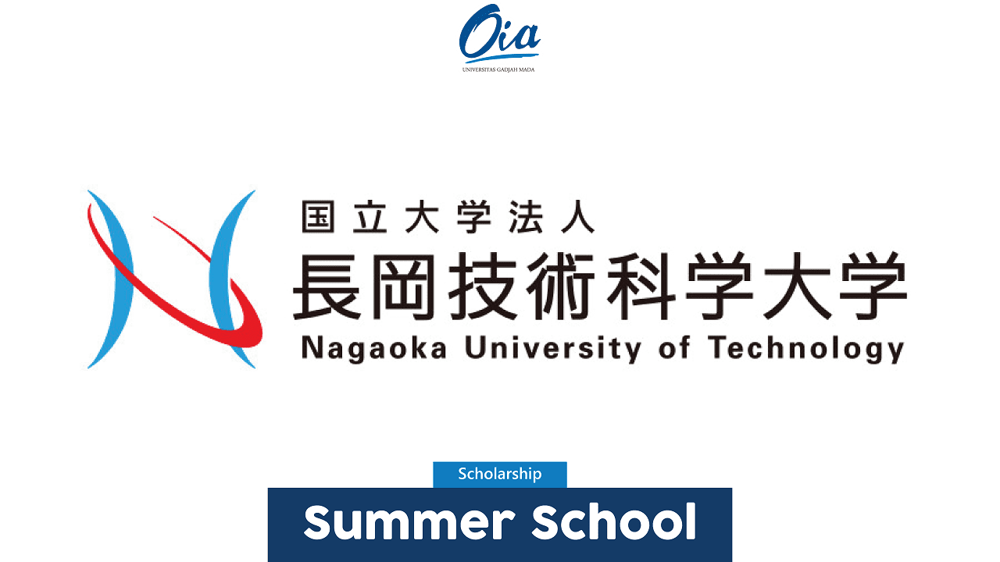
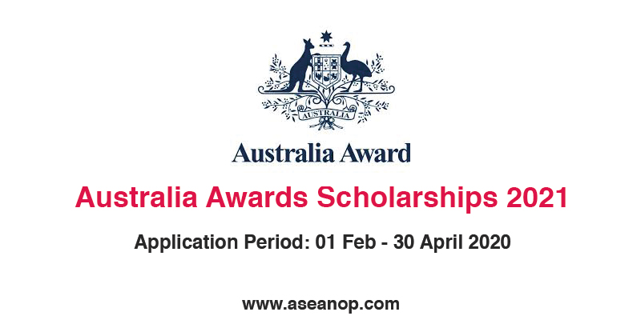

Nagaoka Summer School for Young Engineers (NASSYE)

Nagaoka University of Technology (NUT) is currently inviting students from overseas universities to apply for the Nagaoka Summer School for Young Engineers (NASSYE) in 2020. This program is open to students in their third year of university for 4-year undergraduate program or scheduled to graduate undergraduate program before August 31, 2021. The program offers students the opportunity to participate in research on topics set by the laboratories at NUT, as well as experience cultural exchange.
Australia Award Scholarships

Every year, the Australian Government routinely provides opportunities for international students to continue their S2 and S3 education at the leading universities in the Kangaroo Country. One of them is the Australia Awards Scholarship. This one scholarship is indeed most in demand by international students who want to continue their education to Australia. Applications for the Australia Awards Scholarship have been opened since 1 February 2020 and will be closed on 30 April 2020.
Eramus Mundus

The EMJMD Catalogue displays the masters offering Erasmus Mundus funded scholarships in the academic year 2020-2021. Most consortia require applications to be submitted between October and January, for courses starting the following academic year. Students and potential scholars/guest lecturers should contact directly the relevant consortium for more information on courses and application procedures. Please notice that when you apply, some data is shared with the Agency and treated according to the following privacy statement.
Chevening
Chevening is the UK Government’s global scholarship programme that offers future leaders the unique opportunity to study in the UK. These scholarships are awarded to outstanding professionals from all over the world to pursue a one-year master’s degree in any subject at any UK university. Chevening provides fully-funded scholarships, leaving you free to focus on achieving your academic goals and enjoying the experience of a lifetime. You will live and study in the UK for a year, during which time you will develop professionally and academically, grow your network, experience UK culture, and build lasting positive relationships with the UK. If you have ambition, leadership potential, and a strong academic background, we encourage you to apply during the application window.